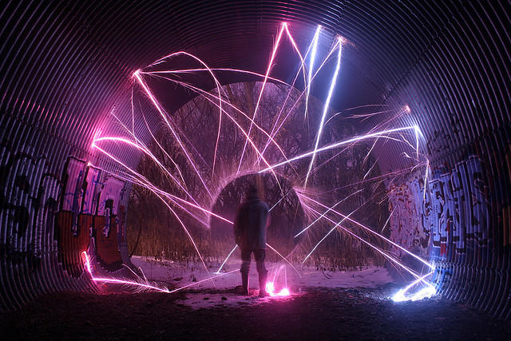
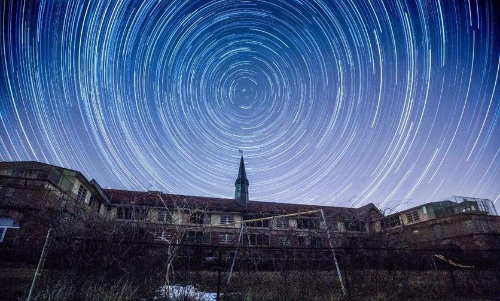
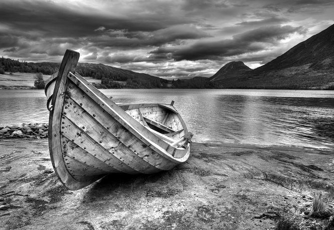

Trabajos Realizados
Hemos realizados muchos trabajos y muchas variantes ramas:
El light painting es una tecnica fotografica con exposiciones largas de luz .Se puede realizar si pintas en el aire con tu mano para que la fotografia capte las ondas de luz .Realizar light es muy sencillo ,configuras el ISO de la camara :ISO 100 ,el dia- fragma tambien debe cambiar en f/8 ,el efecto manual.

El bodegon representa materia inanimada en un pequeño grupo de objetos.Se puede jugar con la composicion,buen uso de la iluminacion,composicion equilibrada y un buen angulo.

La foto Rastros de luz deja ver al objeto como si salieran detellos luminosos de el.Son exposiciones prolongadas de fuentes moviles de luz.Se requiere de una camara que permita controlar la exposicion de la luz y las velocidades del obturador.ISO (bajo) , velocidad de obturacion de 10 a 20 segundos,apertura de f/8.

El recorrido que realizan las estrellas tambien se puede fotografiar ,esto se conoce como star trails o trazas estelares.Mientras mas cerca del Ecuador estes mayor movimiento de las estrellas.Camara que pueda estar en modo Buld,disparador remoto y un tripie.

Composicion de la fotografia en blanco y negro tiene suma importancia porque los con trastes entre luces y sombras son mas grandes.Los detalles y la textura son necesarios prestarle atencion.ISO(alto)
